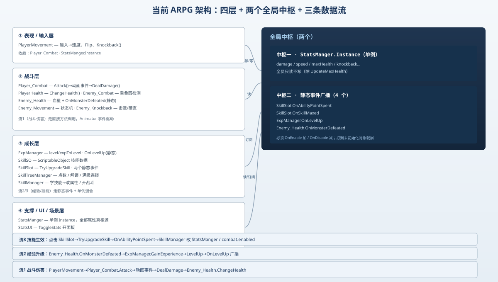

一句话说清这天的内容
上半场复盘了「踩过的坑」，下半场把视角拉到系统层面：当前这套 ARPG 到底长什么样？17 个脚本怎么分层、靠什么通信、数据怎么流。一句话——「单例存档 + 静态事件广播 + MonoBehaviour 拼装」三件套，能跑，但耦合集中在几个单例和静态事件上。
先说结论
当前架构没有 ECS、没有状态机框架、没有把全部数据 ScriptableObject 化。它是典型的「组件拼装 + 两个全局通信中枢」：
- 中枢一：
StatsManger.Instance（单例）——所有属性（血量、伤害、速度、击退…）的唯一真相源。 - 中枢二：几个静态事件——
OnAbilityPointSpent/OnSkillMaxed/OnLevelUp/OnMonsterDefeated，负责跨物体解耦通知。 - 其余全是 MonoBehaviour 组件，挂在 Player / Enemy / UI / Tile 各物体上，各管一摊。
它的优点是「上手快、改一处看一处」；缺点是「全局状态分散在两个中枢里，谁在监听、谁改了数据，靠人脑记」。
一、四层架构
把 17 个脚本按职责归成 4 层：
| 层 | 职责 | 脚本 |
|---|---|---|
| 表现 / 输入层 | 玩家操作、移动、朝向、击退 | PlayerMovement |
| 战斗层 | 玩家与敌人的攻击 / 受击 / 血量 | Player_Combat PlayerHealth Enemy_Combat Enemy_Health Enemy_Movement Enemy_Knockback |
| 成长层 | 经验、等级、技能树 | ExpManager SkillSO SkillSlot SkillTreeManager SkillManager |
| 支撑 / UI / 场景层 | 属性单例、面板、高低地形 | StatsManger StatsUI ToggleSkillTree Elevation_Entry Elevation_Exit |

二、脚本清单（全部 17 个）
| 脚本 | 层 | 关键字段 / 方法 | 依赖 |
|---|---|---|---|
PlayerMovement | 表现 | player_Combat、Knockback() | Player_Combat、StatsManger.Instance |
Player_Combat | 战斗 | Attack()→动画事件→DealDamage()、cooldown/timer | StatsManger.Instance、Enemy_Health、Enemy_Knockback |
PlayerHealth | 战斗 | ChangeHealth(int) | StatsManger.Instance |
Enemy_Combat | 战斗 | Attack() 重叠圆检测 | PlayerHealth、PlayerMovement |
Enemy_Health | 战斗 | currentHealth、OnMonsterDefeated(static) | ExpManager（订阅者） |
Enemy_Movement | 战斗 | EnemyState 状态机、ChangeState() | Player（检测） |
Enemy_Knockback | 战斗 | Knockback()、StunTimer | Enemy_Movement |
ExpManager | 成长 | level/expToLevel、OnLevelUp(static) | Enemy_Health（订阅）、SkillTreeManager（被订阅） |
SkillSO | 成长 | ScriptableObject：skillName/maxLevel/skillIcon | 无 |
SkillSlot | 成长 | TryUpgradeSkill()、OnAbilityPointSpent/OnSkillMaxed(static) | SkillSO |
SkillTreeManager | 成长 | availablePoints、HandleSkillMaxed | SkillSlot、ExpManager |
SkillManager | 成长 | HandleAbilityPointSpent → 改属性 / 开战斗 | SkillSlot、StatsManger、Player_Combat |
StatsManger | 支撑 | 单例 Instance、全部属性 | 无（被全员读） |
StatsUI | 支撑 | ToggleStats 开面板 | StatsManger.Instance |
ToggleSkillTree | 支撑 | ToggleSkillTree 开关 + timeScale | 技能面板 CanvasGroup |
Elevation_Entry | 场景 | 进入触发：关山、sortingOrder=15 | Player |
Elevation_Exit | 场景 | 离开触发：开山、sortingOrder=10 | Player |
三、三条核心数据流
流 1：战斗伤害流（玩家砍敌人）
PlayerMovement 输入 → Player_Combat.Attack() → 动画播放到「挥砍帧」触发 DealDamage() → 重叠圆检测敌人 → Enemy_Health.ChangeHealth(-damage) → 血量 ≤ 0 时 OnMonsterDefeated(expReward) 广播。
流 2：经验升级流（杀怪长大）
Enemy_Health.OnMonsterDefeated → ExpManager.GainExperience() → currentExp ≥ expToLevel 时 LevelUp() → OnLevelUp?.Invoke(1) 广播。
流 3：技能生效流（点格子改游戏）
点击 SkillSlot 的 Button → SkillTreeManager.CheckAvailablePoints → slot.TryUpgradeSkill()（扣点 + 满级连锁解锁 + UpdateUI）→ OnAbilityPointSpent 广播 → SkillManager 订阅后按 skillName 改 StatsManger 或 combat.enabled；OnLevelUp 也会触发 SkillTreeManager.UpdateAbilityPoints 加技能点。
提示
流 1 走「直接方法调用」（Animator 事件驱动，紧耦合但清晰）；流 2、流 3 走「静态事件广播」（解耦但需手动退订）。两种机制混用正是当前架构的辨识特征，也是脆弱点来源。
四、两种通信机制对比
| 机制 | 代表 | 优点 | 风险 |
|---|---|---|---|
单例 Instance | StatsManger.Instance | 随处可读、无订阅管理 | 全局可变状态，难追踪谁改了 |
| 静态事件 | OnLevelUp 等 | 解耦、一对多 | 必须手动 -=；广播打到未初始化对象就崩 |
| 直接调用 | DealDamage() | 清晰、好调试 | 调用方和被调方紧耦合 |
技巧
经验法则：「读数据」用单例，「通知变化」用事件，「一个动作链」用直接调用。当前流 1 用直接调用是对的；流 2/3 用事件也对，但要守住「OnEnable 加、OnDisable 减」这条铁律。
五、当前脆弱点（接 Day 9「明天要补的洞」）
HandleSkillMaxed遍历 24 格没对skillSO判空（靠「都挂了 SO」才不崩）。SkillManager.combat没自动获取，漏拖就 NRE。Player_Combat.Attack()没内部enabled守卫。ToggleSkillTree.statsCanvas变量名误导（实际控技能面板）。- 技能树还是扁平列表，
prerequisiteSkillSlots没真配置。 StatsCanvas.alpha=1、技能面板常显、availablePoints=10硬编码、升级没真给点数——显示 / 数值层很多还是写死的。
六、下一步演进建议（从「能跑」到「稳」）
- 短期（Day 11–13）：把上面 6 个脆弱点逐一焊死（判空、自动取引用、内部守卫、改名、接点数）。
- 中期：引入一个
GameDataScriptableObject 把「玩家存档」从StatsManger的运行时字段里抽出来，场景重启不丢；技能树用ScriptableObject描述前置关系，做到「配置即树」。 - 长期：考虑把「战斗数值」也 ScriptableObject 化（伤害 / 范围 / 击退做成可调资产），策划改数值不用动代码。
一句话总结
当前 ARPG 是一套「单例存档（StatsManger.Instance）+ 静态事件广播（4 个 OnXxx）+ MonoBehaviour 拼装」的三件套架构，17 个脚本分四层（表现 / 战斗 / 成长 / 支撑），三条数据流分别是「直接调用的战斗伤害链」「静态事件驱动的经验升级链」「事件 + 单例混合的技能生效链」；它能跑，但耦合集中在两个全局中枢、且 6 个已知脆弱点（null 格子、漏拖引用、无内部守卫、硬编码数值）还没补——下一步先焊死这 6 个，再考虑把存档与战斗数值 ScriptableObject 化。